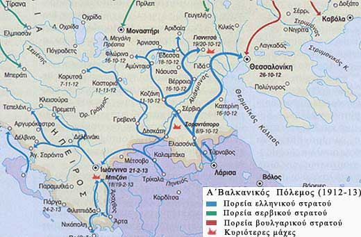

|

O Α΄ Βαλκανικός Πόλεμος (1912-1913) αποτέλεσε συνέχεια των εθνικοαπελευθερωτικών αγώνων των λαών της Βαλκανικής Χερσονήσου (Ελλήνων, Σέρβων, Μαυροβουνίων, Βουλγάρων) εναντίον των Τούρκων. Η νικηφόρα πορεία των συμμαχικών στρατευμάτων υποχρέωσε την ηττημένη Οθωμανική αυτοκρατορία να υπογράψει τη Συνθήκη του Λονδίνου (1913) με την οποία παραχωρούσε όλα τα ευρωπαϊκά εδάφη της στους Βαλκανικούς συμμάχους.
Οι Βαλκανικοί Πόλεμοι μέσα από γράμματα στρατιωτών και τραγούδια της εποχής
Η Ελλάδα των Βαλκανικών Πολέμων [επιλέγεις ΠΟΛΥΜΕΣΑ]
|
|